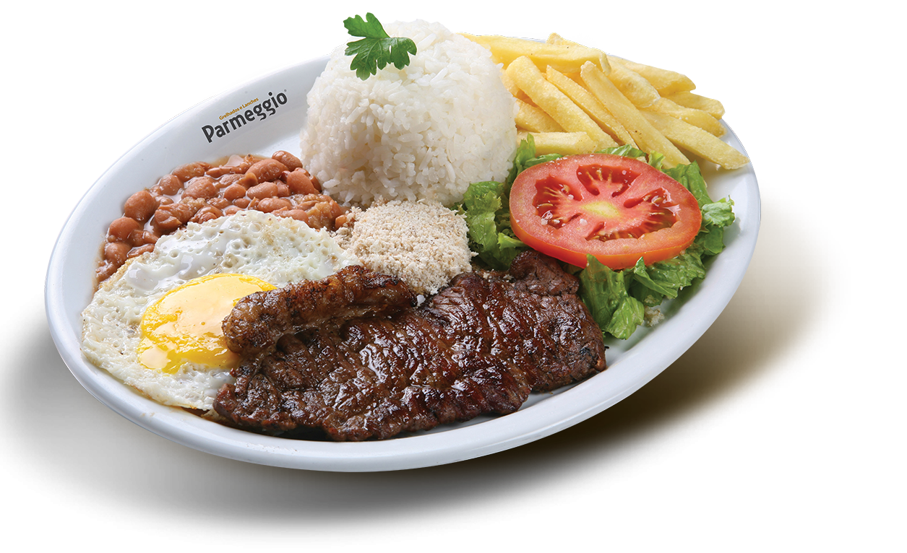

<div class="row">

      <div class="fixed-action-btn">
            <a class="btn-floating btn-large red">
                  <i (click)="openDatePicker()" class="large material-icons">date_range</i>
            </a>
            <!-- <ul>
        <li><a class="btn-floating red"><i class="material-icons">insert_chart</i></a></li>
        <li><a class="btn-floating yellow darken-1"><i class="material-icons">format_quote</i></a></li>
        <li><a class="btn-floating green"><i class="material-icons">publish</i></a></li>
        <li><a class="btn-floating blue"><i class="material-icons">attach_file</i></a></li>
      </ul> -->
      </div>

      <h2 style="text-align: center;color:black"> <i class="material-icons">restaurant_menu</i> MENU </h2>
      <div class="row">
            <ul class="tabs tabs-fixed-width tab-demo z-depth-1">
                  <!-- <li class="tab"><a class="active" href="#breakfast">All</a></li> -->
                  <!-- <li class="tab"><a [ngClass]="{'active': type=='breakfast'}" class="active" (click)="typeSelected('breakfast')">Breakfast</a></li> -->
                  <li class="tab"><a [ngClass]="{'active': type=='lunch'}" (click)="typeSelected('lunch')">Lunch</a></li>
                  <li class="tab"><a [ngClass]="{'active': type=='dinner'}" (click)="typeSelected('dinner')">Dinner</a></li>
                  <!-- <li class="tab"><a href="#test4">Test 4</a></li>
            <li class="tab"><a href="#test0">Test 5</a></li> -->
            </ul>
            <div id="test1" class="col s12">
                  <div _ngcontent-tcm-c57="" class="card">
                        <div *ngIf = "foodItems.length == 0" class="col m4 s12">
                                    Sorry no food found for  <strong>{{getDay()}}</strong> in catagory <strong>{{type}}</strong>
                                    <br>
                                    Please look for other options
                                    <br>
                                    <br>

                                    CHange this warning UI LATER ON
                        </div>
                        <div class="col m4 s12" *ngFor="let foodItem of foodItems">
                              <app-ards [foodItem]='foodItem'></app-ards>
                        </div>

                  </div>
                  <!-- <div id="test1" class="col s12"><p>Test 1</p></div>
          <div id="test2" class="col s12"><p>Test 2</p></div>
          <div id="test3" class="col s12"><p>Test 3</p></div>
          <div id="test4" class="col s12"><p>Test 4</p></div>
          <div id="test0" class="col s12"><p>Test 5</p></div> -->
                  <!-- <div id="test1" class="col s12">Test 1</div>
      <div id="test2" class="col s12">Test 2</div>
      <div id="test3" class="col s12">Test 3</div>
      <div id="test4" class="col s12">Test 4</div> -->
            </div>

            <!-- 
<ul class="collection">
   <a  style="color: black;cursor: pointer;" (click) = "typeSelected('breakfast')"> <li class="collection-item avatar">
       
          
          <h2 class="title">Breakfast</h2>
          <span  class="secondary-content"><i style="color: black;" class="material-icons">send</i></span>
       
    </li>
    </a>
    <a (click) = "typeSelected('lunch')" style="color: black;cursor: pointer;">
  
        <li class="collection-item avatar">
          
          <h2 class="title">Lunch</h2>
          <span  class="secondary-content"><i style="color: black;" class="material-icons">send</i></span>
       
    </li></a>
    <a (click) = "typeSelected('dinner')" style="color: black;cursor: pointer;">
     
    <li class="collection-item avatar">
          
          <h2 class="title">Dinner</h2>
          <span  class="secondary-content"><i style="color: black;" class="material-icons">send</i></span>
       
    </li>
    </a>
 </ul> -->

            <div class="fullscreen-datepicker">

                  <mat-form-field style="visibility: hidden">
                        <input (dateChange)="onDateSelected($event)" [value]="defaultDate" [formControl]="dateControl" matInput [matDatepicker]="picker">
                        <mat-datepicker-toggle matSuffix [for]="picker"></mat-datepicker-toggle>
                        <mat-datepicker class="fullscreen-datepicker" #picker></mat-datepicker>
                  </mat-form-field>
            </div>